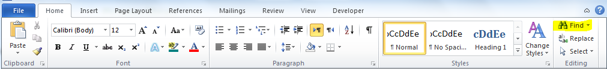
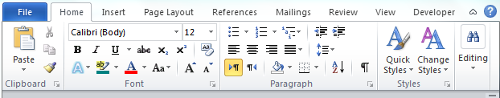

با توجه به درخواست یکی از دوستان مبنی بر تغییر پاورقی ورد(Microsoft Word) این مطلب رو منتشر می کنم. قبل از گفتن راه حل مثل همیشه یکم سوال رو بیشتر توضیح میدم و چند تا مثال واسش بیان می کنم.
فکر کنید یه کتاب یا جزوه یا پایان نامه رو تایپ کردید و طبق اصول نگارش برای بعضی کلمات نامفهوم یا خارجی پاورقی یا یادداشت پایانی (معادل Footnote , Endnote) در نظر گرفتید. حالا از این مدل شماره ی پیش فرض خوشتون نمیاد یا طبق اصول نگارش خاص خودتون دوست دارید از یه مدل خاص استفاده کنید که برای این کار درعکس زیر مطابق مکان رنگی شده عمل می کنید.

یعنی از ریبون، تب Reference رو انتخاب کرده و از طریق کلیک روی دکمه کوچک سمت راست بخش Footnotes تنظیمات مربوط به پاورقی و یادداشت پایانی رو باز کرده سپس در پنجره باز شده از بخش Number Format (بخش رنگی شده) می تونید از انواع مختلف پاورقی استفاده کرده و تغییر مورد نیاز خودتون رو انجام بدید. البته امکان یک سری سفارشی سازی های خاص و تغییر شماره شروع کننده پاورقی هم وجود داره.
روش دوم: یافتن و تغییر پاورقی
تا اینجا یاد گرفتیم که چطوری از فرمت های آماده استفاده کنیم. حالا شما مثلا از هیچ کدوم از اون گزینه های موجود خوشتون نیومده و می خواین از یه فرمت خاص استفاده کنید. برای این کار از تب Home موجود در ریبون و بخش Editing بر روی Replace کلیک کرده و یا کلیدهای ترکیبی Ctrl+H را بفشارید. نمونه عکس های تب Home در زیر آمده است.


سپس در پنجره جایگزینی عبارات که مطابق عکس زیر باز شده است، مراحل را طبق شماره گذاری انجام شده انجام دهید.
{kind=link}
{kind=link}
روش کار
ابتدا از قسمت Format بر روی …Style کلیک کنید. در پنجره باز شده از لیست گزینه Footnote Reference رو انتخاب کرده و با کلیک بر روی ok این پنجره رو ببندید در پنجره اصلی جایگزینی همونطور که در شکل می بینید در زیر کادر جستجو عبارت Style:Footnote Reference رو می تونید مشاهده کنید که نشان از درستی کار شماست. در ادامه در کادر Replace باید عبارت مورد نظر خودمون رو برای جایگزینی وارد کنیم. برای اینکه پاورقی های قبلی رو از دست ندیم از عبارت &^استفاده می کنیم. حالا اگه مثله ما خواستید پاورقی خود رو درون پرانتز قرار بدید، قبل و بعد از عبارت ذکر شده(دقیقا مطابق عکس و عبارت پایین) پرانتز می ذارین.
(^&)

خب فکر می کنم که به اندازه کافی توضیح داده باشم. امیدوارم این مطلب یه روزی به دردتون بخوره و بتونید ازش استفاده کنید. با آرزوی موفقیت…
مرور 89 ديدگاه برای تغییر پاورقی در ورد
سلام
بسیار ممنون از این راهنمایی
خیلی کمک کرد
امیدوارم فرصت کنید و آموزش های بیشتر از استفاده تخصصی از نرم افزار ورد بزارید
با احترام
جعفرزاده
در حال تهیه یه آموزش کامل هستم. موفق باشید
خیلی ممنون آقای عوض زاده خیلی خوب و کاربردی بود . استفاده کردم .
با سلام.همانطور که میدانید زمانی که از پاورقی استفاده میکنیم اعداد در قسمت پایین بصورت بالانویس(uppercase) می باشد. آیا تنظیماتی وجود دارد که بصورت خودکار اعداد روی خط قرار بگیرن نه بالا یا پایین آن؟ و همچنین چطور میشه شماره های رفرنس داخل پرانتز باشد؟
سلام.
اصولا به دلیل اینکه پاورقی هستند باید بالانویس باشند و ندیدم که به صورت پیش فرض توانایی تغییر داشته باشند ولی میشه با ترفند بعد از ایجاد شدن اون ها رو به هر شکلی تغییر داد.
در مورد قرار دادن عدد تو پرانتز هم نتونستم راه حل سالمی پیدا کنم:) ظاهرا امکان اضافه کردن سبک شماره گذاری تو این بخش وجود نداره و فقط میشه از گزینه های موجود استفاده کرد. یه راهش قرار دادن عدد دستی داخل پرانتز برای هر کدوم از پاورقی هاست که مشکل آپدیت نشدن شماره ها رو داره. روش دیگه هم با کمک جستجو و جایگزین کردن اون هاست.
به هر حال نیازهای شما معمول نیست و به همین دلیل هم راه حل معمولی براشون طراحی نشده.
سلام خسته نباشید. ضمن تشکر از اموزش مفید تون. میخواستم بپرسم من طبق اموزش شما شماره های رفرنس رو گذاشتم تو پرانتز حالا میخوام از داخل پرانتز در بیارمشون ولی نمیتونم. لطف میکنید اگه کمکم کنید. باسپاس فراوان.
سلام
شما باید با همون روشی به حالت قبلی برگردونید فقط این بار باید مقادیر قسمت جستجو و جایگزین رو تغییر بدید
سلام، خسته نباشید
من برای نگارش پایان نامه ام مشکلی دارم، مشکل اینجاست که می خواهم شماره ها در پاورقی به اینصورت باشد:
1.
2.
3.
و ….
چگونه می توانم شماره ها را اینگونه مرتب کنم؟ و مشکل دیگر اینکه اگر بخواهم پاورقی ها در دو ستون مرتب شوند چگونه باید اینکار را انجام دهم؟
تشکر میکنم پاسخ را به ایمیلم ارسال کنید.
سلام و ممنون
در مورد بخش اول سوالتون همونطور که تو مثال ما اعداد رو داخل پرانتز قرار دادیم شما هم میتونید بعد از اون نقطه بزارید.
در مورد بخش دوم سوال که چند ستونه کردن پاورقی بود از اونجایی که این ویژگی جدیدا اضافه شده و جایی برای معرفی ندیده بودم یه مطلب در موردش نوشتم که میتونید اون رو مطالعه کرده و به راحتی از ویژگی پاورقی چند ستونه استفاده کنید.
با سلام در مورد پاورقی که در صفحه ورد شماره ها درست و صحیح اسات و لی هنگام چاپ شماره ها از یک تا هر پاورقی در صفحات بعد به صورت پشت سر هم می باشد در صورتی که در سیستم هر صفحه از شماره یک تا آخرین شماره فقط همان صفحه می باشد ولی در پرینت شماره ها از صفحه اول تا آخر پشت سر هم میآید.
سلام
برای جلوگیری از مشکلات این چنینی بهتره یه نسخه پی دی اف از فایل ورد خودتون بسازید و اون رو چاپ کنید
سلام. من توی پی دی اف هم همین مشکل رو دارم. یعنی توی فایل pdf هم همه فوت نتها پشت سر هم هستن و تکرار میشن. لطفا کمک کنید.
سلام. وقتی یه پاورقی ادامه داره و بقیه ش به صفحه دیگه میره ، خط جدا کننده پاورقی از متن در صفحه بعد کامل هست و نیم خط یا ثلث خط نیست. چطور میتونم تبدیل کنم به نیم خط یا ثلث خط، و یه علامت بذارم قبل از متن (مثل فلش) که یعنی این متن از صفحه قبل ادامه پیدا کرده . ممنونم.
سلام
به زودی مجموعه آموزش ورد رو منتشر میکنم که بخش اول جواب شما رو اونجا پاسخ دادم و چون راهش کمی سخت قابل دسترسیه، اینجا نمیشه توضیح داد.
در مورد بخش دوم که گفتید قبلش یه نشانه بذارید، مشکلی برای رفتن به قبل از شماره نیست و میتونید علامت مدنظرتون رو در هر کجایی که خواستید قرار بدید.
سلام،خسته نباشید.
در ویرایش فایل ورد،چون فایل کپی از چندین ورد بوده با چندین footnote،حالا که میخوام به ترتیب شماره گذاری کنم در صورت حذف شماره قدیم ودرج شماره جدید تمام پاورقی ها به هم میریزد.میشه راهنماییم کنید؟
سلام
منظورتون از بهم ریختن چیه؟ ctrl+A رو بزنید و f9 رو فشار بدید تا همه شمارهها دوباره آپدیت بشن
با سلام و تشکر
برای تغییر اندازه اعداد در پاورقی
و نیز تبدیل نقطه یا خط فاصله بعد از اعداد در پاورقی چگونه باید عمل کرد
لطفا به ایملیل من هم اطلاع دهید
سلام
شما میتونید استایل مربوط به پاورقی ها رو ویرایش کرده و این تصحیحات رو توش انجام بدید
اگر اندیس بالای شماره پاورقی به هم خورد، چگونه به حالت عادی اش برگردانیم. منظور شماره پاورقی در متن است مثلا کنار کلمه یا نقل قولی.
سلام
پاک کنید و دوباره اضافه کنید
بسیار سپاسگزارم
با سلام و تشکر
مشکلی در پاورقی وورد ۲۰۱۳ بوجود آمده که مطالب پاورقی به صفحه بعدی با ایجاد یک خط در بالای صفحه دیگر امتداد پیدا می کند و مطالب ادامه ارجاعات صفحه ی بعد می شود. خواهشمند است ، در صورت امکان جهت رفع این مشکل راه نمایی نماید.
سلام . وقت بخیر . اقا ما به یه مشکلی بر خوردیم حسابی . دارم پایان نامه می نویسم . رفرنس دهی اش مدام با مشکل روبه رو میشه . به محض اینکه یه خط به کل متن اضافه میشه کل پایان نامه بهم میریزه چون دستی شماره گذاری کردم، نمیشد هر کاری که کردم . قبلا از طریق درفت راس نویس کردم (برا مقاله ای میخاستم فارسی رفرنس بدم ) و دوباره چپ نویس اش کردم اما بازم مشکل داره نمیدونم چیکا کنم . پایان نامه یه طوریه که مدام اصلاح میخورم با این وجود رفرنس باید به صورت پیش فرض بتونه خودش تنظیم بشه اما نمیدونم چرا نمیشه و با اضافه کردن یه خط کل متن داغون میشه کمک ام کنید هزار بار اصلاح کردم دیگه خسته شدم ممنونم
سلام
توصیه میکنم برای رفع مشکلتون آموزش کامل ساده و سریع ورد رو ببینید!
سلام.
با استفاده از end note در word رفرنس دهی انجام دادم اما متاسفانه با هربار باز و بسته کردن سند دوبار مرجع ها را تکرار میکند. لطفا راهنمایی بفرمایید.
با سلام و تشکر از سایت خوبتون
من اعداد پاورقی متنم به صورت اعداد فرد رفرنس دهی می شه
ممنون میشم اگه راهنمایی فرمایید که چجوری میشه اعداد به ترتیب معمول درج بشه
با تشکر
سلام
بعد از اجرای این آموزش علامت مورد نظر در اول یا آخر اعداد قرار می گیره؛ یعنی اول پاورقی. من می خوام که آخر پاورقی قرار بگیره یعنی بعد از شماره صفحه به صورت دست جمعی نقطه گذاری بشه. آیا راهی هست؟
با سلام.
ابتدا تشکر می کنم از آموزش های مختصر و مفیدتون که خیلی خوش ساخت و کاربردی طراحی شده اند. من Word و Powerpoint رو دیدم. عالین.
مشکل: فوت نوت های من همگی صحیح نمایش داده میشن، اما وقتی PDF می کنم ارقام شماره هاشون از هم فاصله زیادی می گیرن. مثلا :
۲ ۱I.S. System و درستش این بوده: ۱۲I.S. System . ارقام عدد ۱۲ از هم جدا میشن.
ورژن ورد ۲۰۱۶، استایل Footnote رو تغییر ندادم و با همون فونت Times و چپ چین هست.
ممنون میشم اگر نظری داشتید بنده رو در جریان بذارید.
سلام
این مشکل شما تو نسخه ۲۰۱۶ دیده شده. البته با آپدیت آفیس به آخرین نسخه تاحدودی برطرف میشه.
منم همین مشکل رو دارم
سلام، اعداد پاورقی را پاک کنید و بصورت دستی دوباره بنویسید، مشکل حل میشه.
سلام خسته نباشید، ممنون به خاطر مطالب مفیدتون، می خواستم کنار شماره های پاورقیم خط تیره قرار بگیره یعنی اول شماره بعد خط تیره و بعد یه فاصله و درنهایت کلمه مورد نظر ممنون میشم راهنماییم کنید
سلام
واقعا دستت تون درد نکنه
خیلی کاربردی بود برام خیلی وقت بود دنبالش بودم
ببخشید یه سوال داشتم بخوام یک متن رو بنویسم بعد برای همون متن زیر همون صفحه میخوام یک شرح بزنم به طور اتومات امکان داره زیرش خط کشیده بیاد؟؟
شرحی که برای متن اصلی میزنم رفرنس هم داره …رفرنس که مشکلی نداره اما میخوام اون بالا که متن رو جدا می کنم اتومات بیاد امکانش هست در ورد؟؟؟
ممنووون
سلام و ممنون از مطالبتون..
مشکل من اینه که دارم توی تمپلیت یه ژورنال مقاله می نویسم و همون صفحه ی اول برای اسم نویسنده باید پاورقی بزنم وقتی که پاورقی میزنم نصف مطالبم از بعد از چکیده(تک ستونیه) به صفحه بعد منتقل میشن…یعنی نصف مطالب صفحه اول(از جایی که دوستونی میشن) میرن صفحه ۲٫٫٫٫متنمم انگلیسیه و دوستونی ….وردمم ۲۰۱۰٫٫٫٫ممنون میشم اگه راهنمایی کنید تا درست شه..
با سلام
من میخواستم یک سری از ارجاعاتم با عدد نشون داده بشه یه سری دیگه با علامت دیگه مثل ستاره… ایا امکانش هست که توی یک متن بشه پاورقی ها رو با دو علامت متفاوت نشون داد؟
سلام
ندیدم، اگه لازم هست میتونید دستی تنظیم کنید.
اگه توی یه صفحه مثلا ۵تا ارجاع ستاره ای باشه چطوری نشون میدین!؟ با ۵ تا ستاره!؟
سلام خسته نباشید؛
ورد من ۲۰۱۰ هستش وقتی پاورقی میزنم توی متن بجا اینکه عدد بالای کلمه بیاد جفتش میزنه چطور میتونم درستش کنم؟ مرسی از اینکه پاسخگو هستید
سلام
استایلتون بهم ریخته. روی یه فایل جدید تست کنید.
بعد از انتخاب شماره رین روی عدد و دکمه ctrl + shift + = رو بزنید. یا از تب home گروه fonts روی دکمه superscript بزنید.
ممنون میشم زودتر جواب بدید چون دارم کار پایان نامم رو انجام میدم. ممنون
سلام. مشکل من اینه که اعداد شماره پانویس ها در زمانی که pdfمیکنیم . اعداد دورقمی یکان عدد در ستون دیگری روبروی متن پانویس قرار میگیره ودر سه رقمی ها هم به همین ترتیب میشه سه ستون.
ممنون میشم راهنمایی بفرمایید
سلام و روز بخیر
در قسمت پاورقی شماره ها بصورت superscript و بدون قرار گرفتن هیچ نوع symbol قرار میگیرد. لطفا راهنمایی کنید
سلام
باید به شکل دیگهای نمایش داده بشن؟ این حالت پیش فرض هست.
اگر مایل به تغییر هستید از تب reference در بخش footnote تنظیمات رو باز کرده و شکل نمایش یا شمارهگذاری رو تغییر بدید.
سلام من میخوام اعداد پاورقی داخل متن را داخل پرانتز کنم چی کار کنم؟
سلام ممنون از آموزش مفیدتون
سوال من اینه که چطور عدد پاورقی در متن را داخل پرانتز کنم
سلام وقت بخیر. ممنونم از مطالب زیباتون. یه راهنمایی میخواستم.شماره پانویسها بصورت پیوسته هست و فایلم در ورد ۲۰۱۰ هست.و تا اینجا هیچ مشکلی نیست.اما وقتی میخواهم به پی دی اف تبدیل کنم شماره پانویسها با فاصله میفته. در ورد ۳۴rabinz وقتی به پی دی اف تبدیل میشه
۳rabinz 4 میفته .رقم ۴ با فاصله. ممنون میشم راهنماییم کنید.با سپاس
سلام
مشکل من اینه که پاورقی هام شماره فارسی میخوره و راست چینه در صورتی که میخوام اسامی انگلیسی رو بنویسم ، از طریق درفت تونستم خط پاورقی رو چپ چین کنم ولی اعداد هنوز فارسی هستن از قسمت option هم context رو انتخاب کردم ولی باز اعداد فارسی میشن
زبان کامپیوتر انگلیسی کنید درست میشه
سلام و با تشکر از آموزش ارزشمند شما. من در حال تایپ پایان نامه در word 2013 هستم و کلی هم footnote انگلیسی دارم که توی ورد هیچ مشکلی ندارند. ولی وقتی که این فایل به pdf تبدیل میشه حضور این footnote ها باعث میشه که چیدمان صفحات pdf با word فرق داشته باشه یعنی از صفحه اول که پاورقی دارم شروع میکنه یه خط از متن رو میندازه صفحه بعد و همینطور الی آخر. جوری که برای یه فایل ۷۰ صفحه ای توی word یه فایل ۷۳ صفحه ای تو pdf ایجاد میشه. وقتی که footnote ها رو کلا از متن حذف میکنم چنین مشکلی پیش نمیاد. لطفا راهنمایی بفرمایید.
سلام
سایز صفحه رو بررسی کنید که در هر دو حالت روی آ۴ باشه
سلام وقت بخیر
ببخشید من در دارم پایان نامه می نویسم پاورقی هام می خوام تو هر صفحه از یک شروع بشه اما نمیشه چندتا راه حل هم امتحان کردم نشد،چه جوری درستش کنم؟
سلام برین بفرست قسمت پاورقی تو قسمت نامبرینگ بزنید ….to each
برین بفرست قسمت پاورقی تو قسمت نامبرینگ بزنید ….to each
سلام من پانویس هام رو در پایان نامه نوشتم و حالا طبق فرمت باید بعد از شماره نقطه بگذارم اما نه در متن منظورم همون پایین سند ورد زیر خطه ولی با این روش که شما فرمودید اعداد داخل متن اصلی تغییر میکنن راهی براش سراغ دارید
با سلام اعداد پاورقی هار من داخل متن موقع پرینت چند کلمه اونورتر میوفته پی دی اف هم که کردم مشکلم برطف نشد تو رو خدا کمک کنین
سلام
من از ورد ۲۰۱۰ استفاد می کنم. دو تا از فوت نوت ها تو یک صفحه که در متن شماره ۷۸ و ۷۹ ان تو پاورقی هردو شماره ۷۹ خوردن پشت هم و هر کار می کنم آپدیت هم نمیشه
ممنون میشم راهنمایی بفرمایین
سلام خسته نباشید یه سوال داشتم چطوری می تونم اگه ۴ تا پاورقی داشتم و مثلا شماره ۳ رو حذف کردم پاورق یهای دیگه خودبخود شمارشون مرتب بشه و اپدیت بشن
سلام
بهصورت خودکار این اتفاق رخ میده و نیاز به اقدام خاصی از سمت شما نیست.
درود و وقتتون بخیر
ببخشید در اصلاح فایل پایاننامه در وورد ۲۰۱۶، مجبور به حذف یک سری از فوتنوتها هستم ولی پس از حذف، شماره بقیه فوتنوتهای باقیمانده آپدیت نمیشوند. راهحلی دارد؟
سلام بزرگوار……….. خیلی دوست دارم اینگونه اطلاعات چه در word و چه در excel در خودم افزایش بدم چون اطلاعاتم در مورد سیستم زیاد نیست (متاسفانه) و اینگونه مسایل ریز برام مشکل ساز میشه،اگر آدرسی جهت آموزش در دستور کار خود دارید لطفا به من اطلاع بدید تا بتونم به انجا مراجعه کنم.
با سلام ، من یه متن رو خودم تایپ کردم تو w0rd2010
الان وقتی میخوام چندتا نقطه پایانی رو پاک کنم کل متن بهم میریزه باید چیکار کنم ؟؟
سلام
منظورتون از بهم ریختن رو بیشتر توضیح میدن؟
با سلام، احترام و تشکر از مطالب خوبتان
آیا این امکان وجود دارد که فونت پیش فرض پاورقی را در ورد تغییر دهیم؟ به گونه ای که نیاز به تنظیم فونت پاورقی در هر صفحه نباشد.
پیشاپیش از پاسخ شما سپاسگزارم
سلام
بله، فونت استایل نرمال رو تغییر بدید
سلام آقای عوض زاده سوالی داشتم چطور می تونم فاصله خط پاورقی رو با خود پاورقی کم کنم توی فایل وردی که دارم این فاصله خیلی زیاده ازطریق page layout -spacing هم رفع نمیشه ممنون میشم راهنمایی بفرمایید.
سلام عجب سایت مسخرهای خوب داداش بلدنیستی بگو بلد نیستم اخه بعضی جوابهات مسخرهای هستش
سلام
ممنون میشم زودتر پاسخ من رو بدید فرصتی ندارم
فاصله خط پاورقی تا ته مطالب متغییر هست، یعنی تو بعضی صفحات این فاصله به اندازه یک خط و بعضی دیگر به اندازه دو خط فاصله میندازه درصورتی که همه شرایط برای همه یکسان هست. مثلا ۱۰ صفه پشت سرهم تو یک پاراگراف و عکس و … نباید فاصله ته مطالب تا خط پاورقی بیشتر از یک سطر باشه ولی اوتومات متغییر هست و خود وورد دلبخواهی زیاد و کمش می کنه
چکار کنم فاصله سطر پایانی صفحه را تا خط پاورقی خودم تعیین کنم؟
سلام
احتمالا مشکل شما به یکی از امکانات ورد به نام keep lines together برمیگرده که با فعال شدنش روی پاراگرافها متون در کنار هم نگهداشته میشن تا از پراکندگی جلوگیری کنه. از تنظیمات پاراگراف در تب دوم با نام line and page breaks تیک مروبوط به این گزینه رو غیرفعال کنید.
با سلام و احترام
آیا راهی وجود داره که ارجاعات درون متنی به صورت خودکار تبدیل به پاورقی بشن؟ برعکسش را یعنی تبدیل ارجاعات دورن متنی به پاورقی را بلدم ممنون میشم راهنماییم کنید.
ببخشید در پست قبل اشتباه شد تبدیل خودکار پاورقی به ارجاع درون متنی را بلد هستم اما درون متنی به پاورقی را خیر
سلام
ممنون از آموزشهای مفیدتون یه سوال داشتم
گاهی در یک مقاله لازم هست غیر از پاورقی های معمول که با اعداد هست توضیحاتی با ستاره در پاورقی بیاید یک ستاره و دو ستاره و سه ستاره …. این کار رو چطور میتونم انجام بدهم
البته یک ستاره رو بلد هستم هما برای دمیش دو ستاره نمیاد و کاراکتر بعد از ستاره میاد ممکنه کمکم کنید؟
سلام ممنون از سایت خوبتون یه سوال داشتم برا پاورقی من در ورد ۲۰۱۶ اعداد پاورقی بعد از تبدیل فایل ورد به pdf بهم میریزه مثلا عدد ۱۵ یکش اول نوشته میشه و پنجش اخر متن پاورقی جدا از هم میشن اعداد
با سلام. ببخشید من وقتی فایل ورد را به PDF تبدیل میکنم عددی که شماره فوت نوت را در متن فارسی نشان میده یا حذف شده یا اینکه کلا جابه جا شده. مشکل از کجاست؟ لطفا من را راهنمایی کنین
سلام برای مشکلات وردی خیلی جستجو کردم تا به حال توضیحات کسی مثل توضیحات جناب عالی واضح نبوده. خیلی ممنونم. امید دارم همچنان جوابگوی سؤالات بمانی تا همه استفاده کنند از شما.
با عرض سلام و خسته نباشید. من یه اشکال در پاورقی داشتم که هیچ جور حل نمیشه. من برای مقاله طبق فرمت مجله باید endnote را داخل جدول بگذارم.کاری کردم این بود اعداد پی نوشت که به طور اتوماتیک آخر فایل ظاهر میشه رو حذف کردم و دستی جدول کشیدم و پی نوشت را وارد کردم خودم. ولی حالا به مشکل برخوردم و امکان پاک کردن فاصله های پی نوشت رو ندارم error میده. می خواستم ببینم راهی برای پاک کردنشون هست؟
با عرض سلام و خسته نباشید. من یه اشکال در پاورقی داشتم که هیچ جور حل نمیشه. من برای مقاله طبق فرمت مجله باید endnote را داخل جدول بگذارم.کاری کردم این بود اعداد پی نوشت که به طور اتوماتیک آخر فایل ظاهر میشه رو حذف کردم و دستی جدول کشیدم و پی نوشت را وارد کردم خودم. ولی حالا به مشکل برخوردم و امکان پاک کردن فاصله های پی نوشت رو ندارم error میده. می خواستم ببینم راهی برای پاک کردنشون هست؟
سلام و خداقوت
از وسط فایلwordم یهویی پاورقی های من از هر صفحه مجزا شماره گذاری نمیونه و ادامه دار هستش. در تنظیماتشم گزینهrestart each page زدم ولی باز درست نشد. ممنون میشم راهنمایی بفرمایید.
سلام و خسته نباشید
بنده باید پاورقی رو به انتهای فایلم انتقال بدم. کانورت میکنم پاورقی و مراجع باهم میان ولی باید جدا جدا در انتهای متن باشن.ممنونم
عالى بود، تشکر ?
سلام من وقتیمتن ورد که پاورقی دارد رو به پی دی اف تبدیل میکنم شماره پاورقی ها هم نامرتب میشود هم بهم میریزد میشه راهنمایی کنید من خیلی کارم گیره
سلام و سپاس!
پاورقی در ورد ۲۰۱۰ همیش چپ چین به وجود میاد..و برای راست چین باید همیش Ctl+R را بزنی آیا راهی وجود دارد که برای همیش راست چین بیاد، همین مشکل در نزد دیگر دوستانم نیز است. زیرا هرچه راست چین را دیفولت کنی باز هم چپ چین ایجاد میشود..امیدوارم دراین مورد همکاری کنید.
سلام. من یک سوال داشتم از خدمت شما و اون هم این هست که من در فایل word گزینه footnote رو انتخاب کردم و کلا فایل word کاملا درست هست اما وقتی همون فایل رو به pdf تبدیل می کنم شماره footnote در متن به صورت دنباله ای هست (یعنی ۱۲۳۴۵۶۷۸) اما در پایین صفحه، در هر صفحه شماره footnote از یک شروع می شه و نمی دونم چرا. در فایل word کاملا درست هست اما این اشکال در هنگام تبدیل به pdf اتفاق می افته.
ممنوم می شم اگر راهنمایی کنید.
سلام
دقیقتر باید بررسی بشه. برای رفع سریع، از نرم افزارهای پرینت پیدیاف استفاده کنید.
بسیار عالی خدا قوت
جواد جان ممنونم
بسیار مختصر و مفید و کاربردی بود
با سلام
ببخشید در فایل وورد پایان نامه ترتیب شماره گذاری پاورقیها درست هست اما وقتی فایل وورد رو تبدیل به پی دی اف میکنم، ترتیب شماره های پاورقی کاملا بهم میخوره مثلا همه شماره ها میشه ۱ و وسط و راست ستون اصلی این شماره ها، ستون پاورقی میاد، درحالیکه من تو تنظیماتم تعداد ستون رو یک زدم، هر راه حلی ر و امتحان کردم تا فایل پی دی اف بهم نخوره اما اصلا درست نمیشه 🙁
سلام
من وقتی word رو تبدیل به pdf میکنم جای عدد بعضی فوت نوت ها در متن جابجا میشه و مثلا میره جلوتر از کلمه ای که باید باشه.
نسخه word من ۲۰۱۶ هست.وقتی با افیس دوستم که ۲۰۱۳ هست تبدیل به پی دی اف میکنم مشکلی نداره.
ولی چیکار کنم که مشکل تو افیس ۲۰۱۶ خودم حل بشه؟
(با dopdf هم امتحان کردم حل نشد.)
ممنون میشم راهنمایی کنید مرسی
با سلام و تشکر از مطالب مفیدتون.
من هم مثل برخی دوستان در ورد ۲۰۱۶ با مشکل جدا شدن اعداد دورقمی انگلیسی در پاورقی بعد از تبدیل فایل ورد به پی دی اف مواجه شدم. تنظیمات خاصی باید انجام بشه؟ ممنون میشم راهنمایی بفرمایید.
سلام خسته نباشید
بخشید بعضی مواقع وقتی از فایل وردی PDF میگیرم، بعضی وقتها سطر آخرش محو میشود یا بعضی وقتها کلمه آخر سطر دوباره از ابتدای سطر بعدی میاد.
به نظر شما باید چه کار کنم که این مشکلات پیش نیاد.
متشکرم